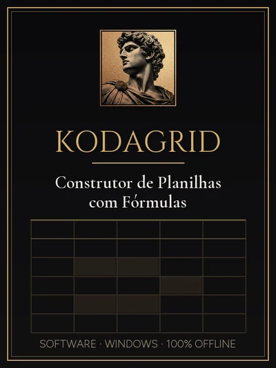
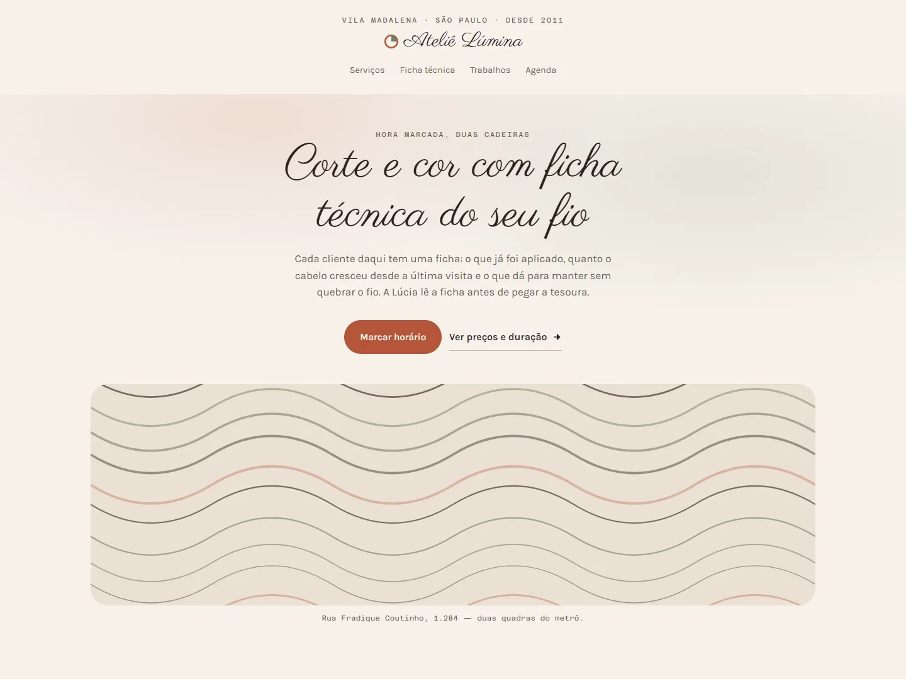
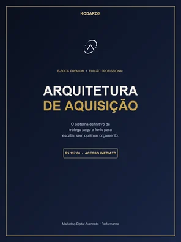
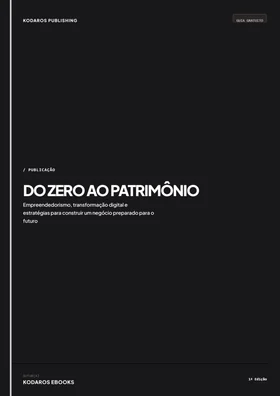

Sites básicos e profissionais.
Sites institucionais, catálogos e páginas de serviço com identidade própria, mobile first e medição.
- Estrutura e conteúdo
- Design responsivo
- SEO técnico e metadados
Tecnologia, conteúdo e engenharia
A Kodaros cria sites, automações, bots, agentes e sistemas sob medida. Cada serviço mostra o que já foi construído: código publicado, produto rodando e número verificável.
Serviços
Cada linha tem escopo, prazo e entrega definidos. O detalhe está na página de cada serviço, com prova do que já foi construído.
Sites institucionais, catálogos e páginas de serviço com identidade própria, mobile first e medição.
Landing pages para campanhas, lançamentos e captura. Copy, design, formulário e integração.
Automação de tarefas repetitivas com n8n, Make, scripts e integrações. Do gargalo ao monitoramento.
Bots para Telegram, Discord e WhatsApp. Agentes com base de conhecimento, guardrails e revisão humana.
Sistemas web e aplicativos sob medida. API, autenticação, painel, deploy e manutenção.
Tráfego pago, conteúdo, SEO e criativos. A mesma disciplina de engenharia aplicada à aquisição.
Evidência
Não é uma lista de promessas. É o que pode ser aberto, testado e lido hoje.
Produtos
Uma parte da Kodaros é produto. A outra é serviço. Os dois se sustentam com a mesma base técnica.

Construtor de planilhas com fórmulas. 13 templates, arquivo .xlsx real e 100% offline.
Conhecer
Uma página por nicho, com nome, serviço e identidade próprios. Referência real para o seu projeto.
Abrir mostruário
Um problema por livro. Tráfego, vendas, gestão, finanças, site e reclamações. Entrega imediata.
Ver biblioteca53 calculadoras de aquisição, finanças, vendas e gestão. Sem cadastro, sem custo e com funcionamento offline.
Abrir ferramentasProcesso
Quatro etapas, com escopo fechado antes de começar. Sem surpresa no meio do caminho.
Uma conversa curta para mapear o problema, o público e o que precisa ser resolvido primeiro.
Entregáveis, prazo e valor por escrito. O que entra, o que não entra e como o resultado será medido.
Construção em etapas, com revisão humana e registro do que foi feito. O código fica versionado.
Deploy, treinamento e suporte. O projeto não termina no dia da entrega.
Planos
Três formatos de projeto. Automações, bots e agentes são orçados por processo, depois do diagnóstico.
Uma página para uma campanha, lançamento ou captura. Copy, design, formulário e publicação.
Até seis páginas, painel de conteúdo, SEO e treinamento. A base para a empresa aparecer e vender.
Levantamento, arquitetura, API, interface, deploy e testes. Do processo ao sistema rodando.
O diagnóstico é gratuito e não compromete orçamento. O pagamento é dividido em etapas, conforme o avanço do projeto.
Diagnóstico gratuito
Três perguntas sobre o seu cenário. No fim você recebe um retrato do gargalo, uma recomendação de serviço e um e-book de presente.

Dúvidas
Se a sua pergunta não estiver aqui, fale no WhatsApp. A resposta vem de uma pessoa, não de um robô.
Falar com a KodarosSites, landing pages, automações, bots, agentes de IA, sistemas sob medida, software desktop e marketing. O escopo é definido por projeto, com prazo e valor fechados antes de começar.
Depende do número de páginas, do conteúdo, das integrações e do prazo. O orçamento é feito depois de um diagnóstico curto, e o valor aparece por escrito. Sem taxa escondida.
Uma landing page leva de cinco a sete dias. Um site institucional leva de duas a três semanas. Um sistema sob medida leva de quatro a oito semanas, a depender do escopo.
Sim. O trabalho é remoto, com reuniões por vídeo e acompanhamento por WhatsApp ou e-mail. O pagamento e o contrato são digitais.
Sim. O repositório, os arquivos e as credenciais são entregues no seu nome. A Kodaros mantém acesso apenas para suporte, quando contratado.
São três perguntas sobre o seu cenário. No fim você recebe um retrato do gargalo, uma recomendação de serviço e um e-book de presente. Sem compromisso de orçamento.
Sim. A Kodaros mapeia o processo, integra as ferramentas e publica o fluxo. No caso de agentes, a base de conhecimento e os limites são definidos antes da publicação.
Pelo formulário do site ou pelo WhatsApp. A conversa começa com o diagnóstico, segue para a proposta e termina com o escopo assinado. O pagamento é dividido em etapas.
Contato
Conte o que precisa resolver. A conversa começa com o diagnóstico e segue para uma proposta com escopo, prazo e valor.